{kind=link}
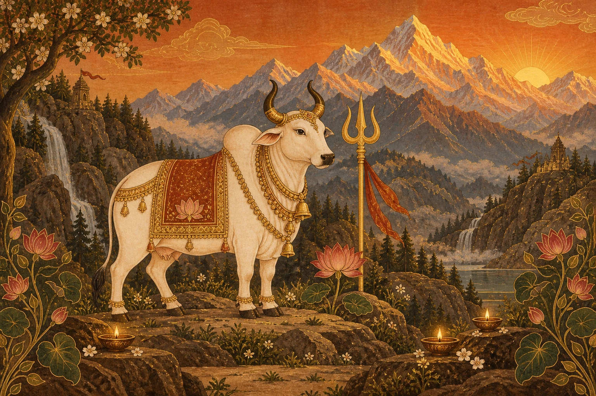
Night 1 — Shailaputri
Save image ↓chapter-01.webp
Ten night illustrations + four decorative artworks. Save the ZIP to your phone and extract it in Files, or save images individually below.
Download all 14 images + prompt ↓Download animation prompt ↓Open the prepared Google Flow project ↗
In Flow choose Add media → Upload, then select the extracted images. You can stop after upload and let Codex continue generation. If Save image opens the image, long-press it and choose Save Image or Download Image.
Animate this exact illustration as an 8-second seamless loop. Preserve its composition, sharp miniature-painting detail and rust, ivory and antique gold colours. Locked camera: animate subjects rather than using a zoom or pan. Every visible flame flickers independently; reflected light and water shimmer; flowers and leaves sway. Animate visible animals with natural breathing, blinking and gentle ear movement; visible birds with subtle head, feather and wing movement. Dancers take small graceful rhythmic steps. Only animate subjects actually present in the image. Preserve anatomy and sacred symbols; no distortion, no new subjects, no cuts, no text or logos. Aim to return to the starting pose for a smooth loop. No speech or music.

chapter-01.webp
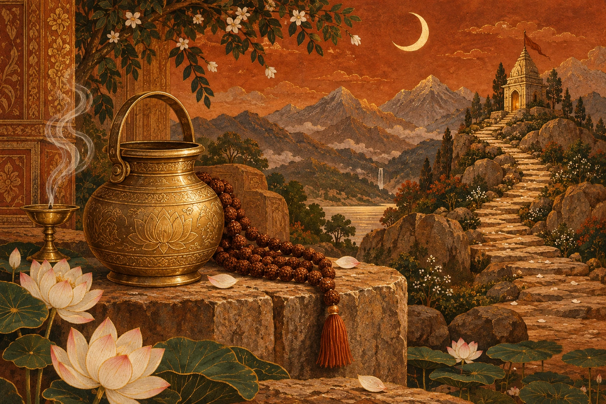
chapter-02.webp
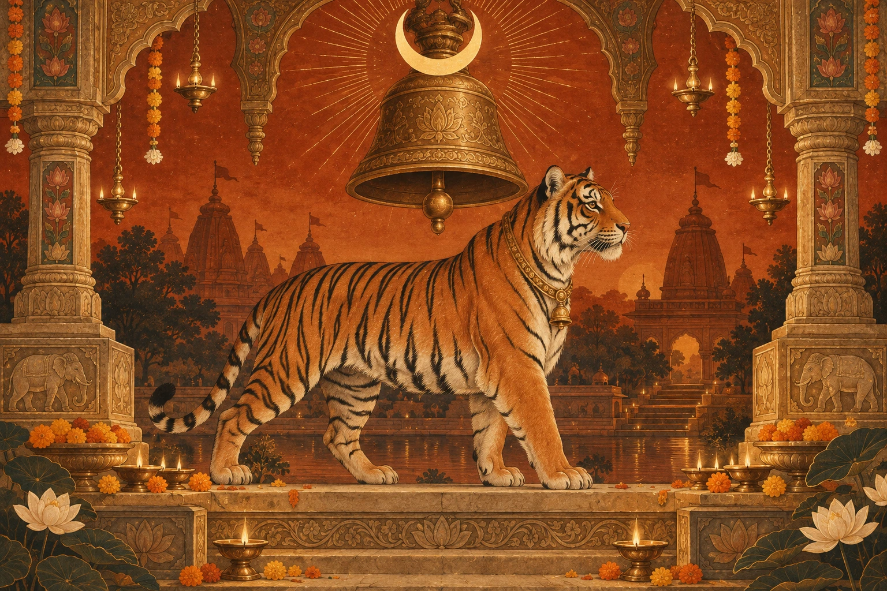
chapter-03.webp
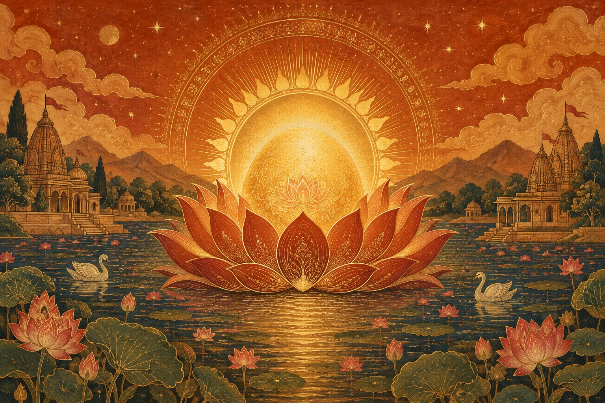
chapter-04.webp
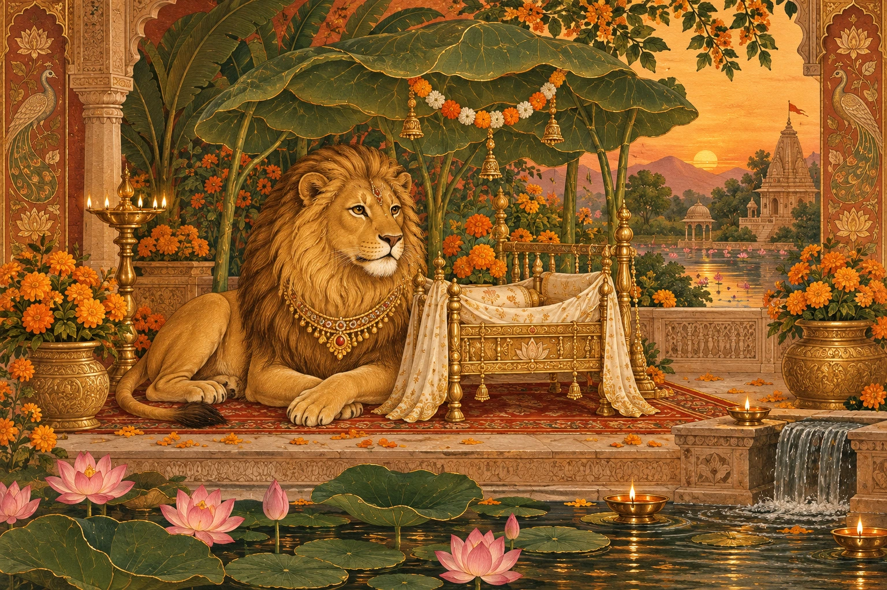
chapter-05.webp
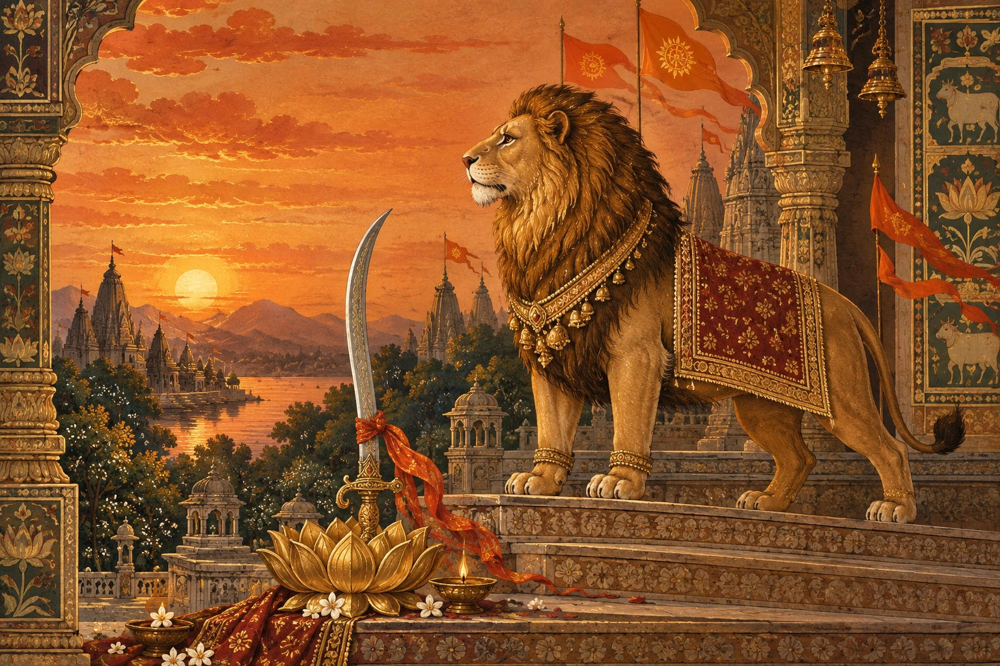
chapter-06.webp
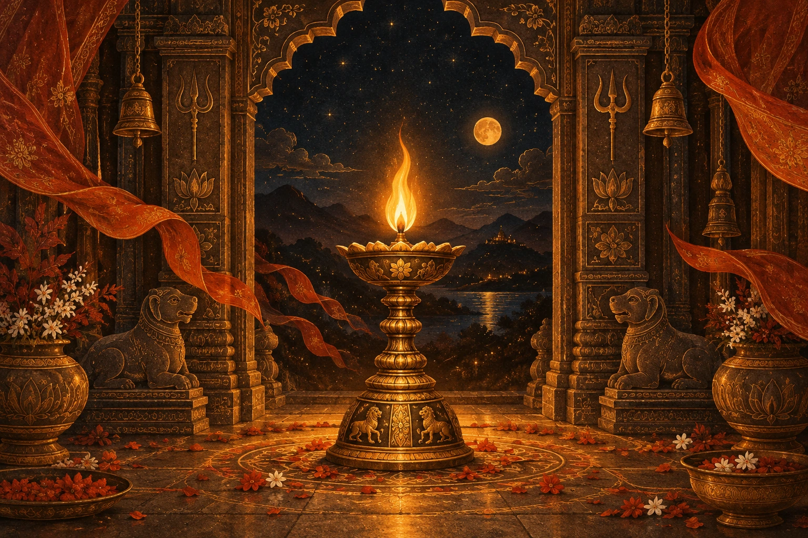
chapter-07.webp
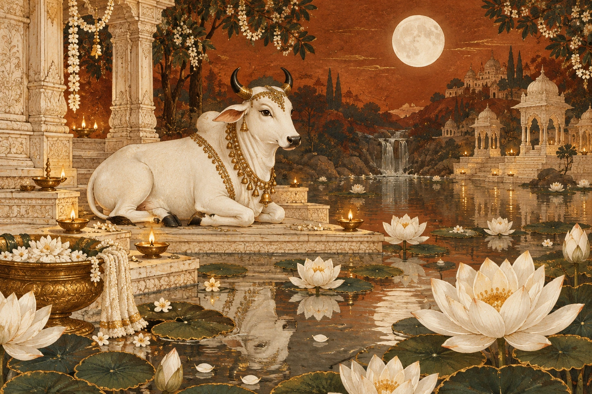
chapter-08.webp
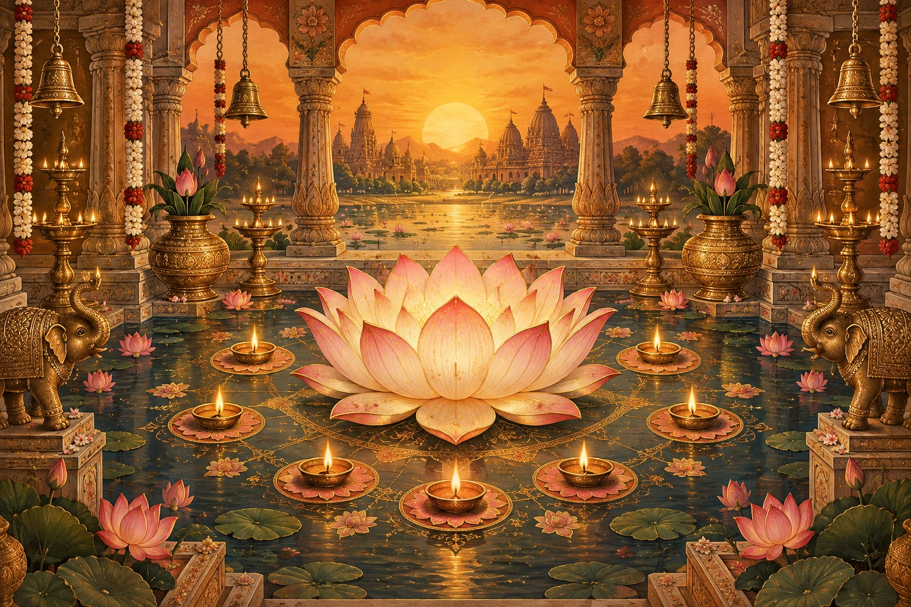
chapter-09.webp
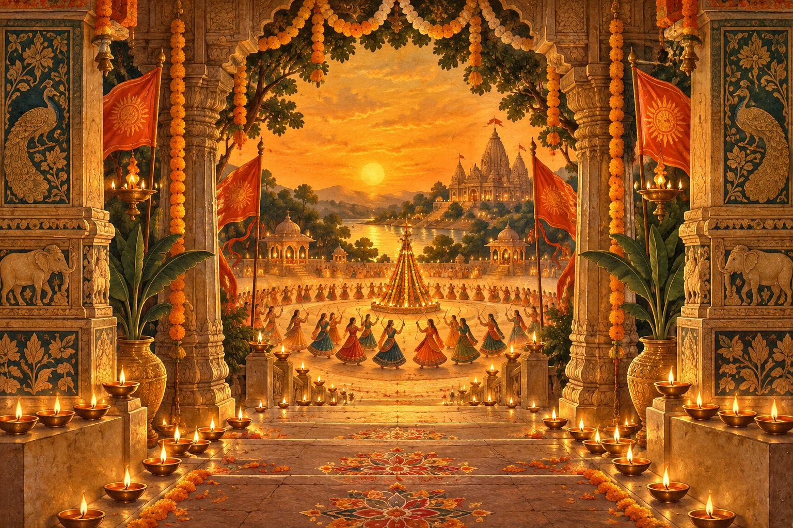
chapter-10.webp
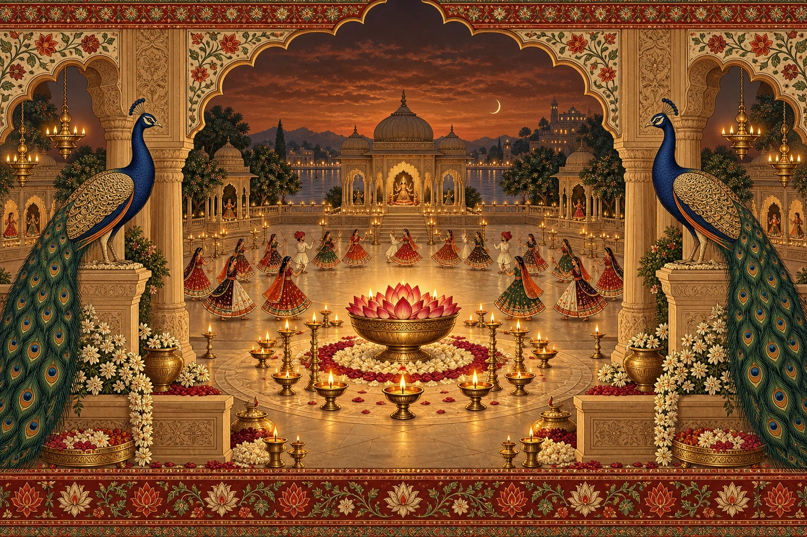
divi-courtyard.webp

divi-lotus-diya.webp
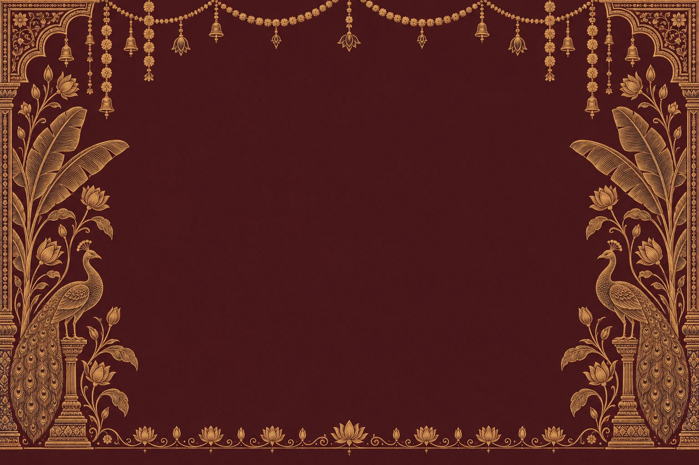
divi-heritage-frame.webp
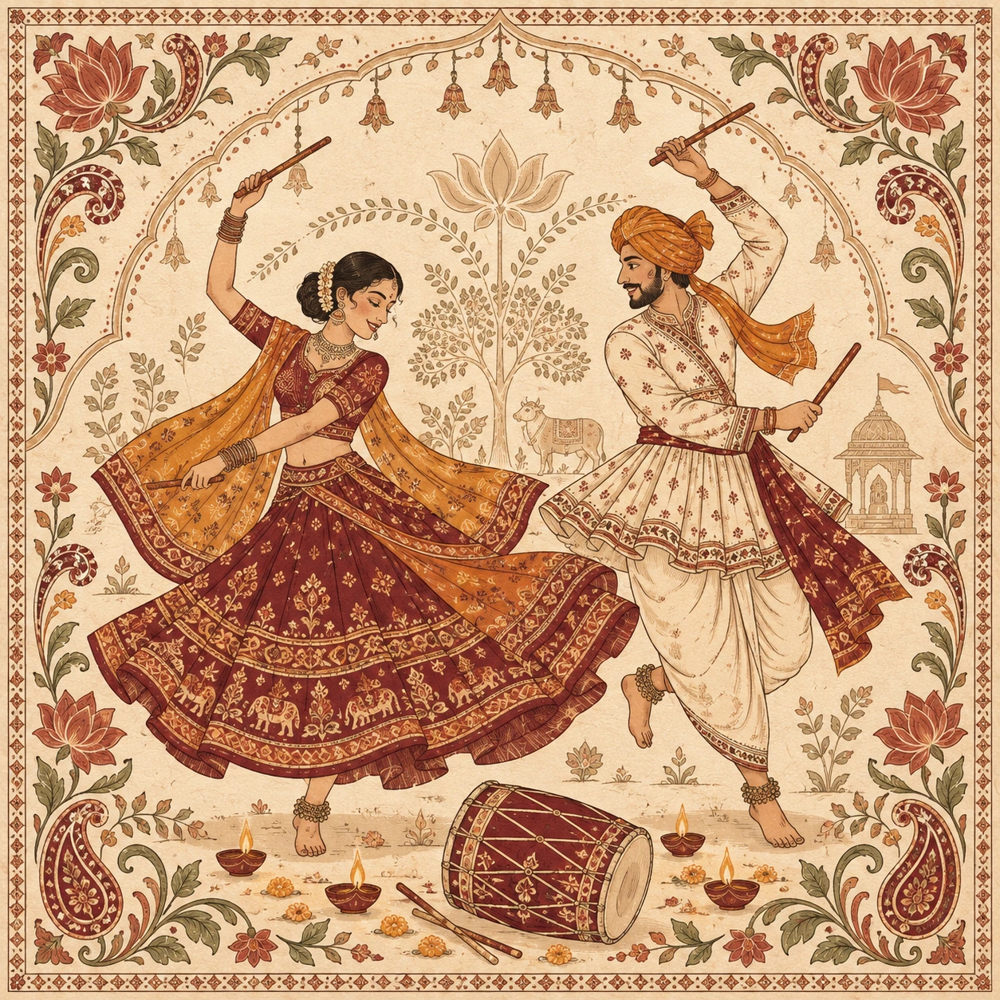
divi-garba-art.webp
{kind=link}
{kind=link}
{kind=link}
{kind=link}
{kind=link}
{kind=link}
{kind=link}
{kind=link}
{kind=link}
{kind=link}
{kind=link}
{kind=link}